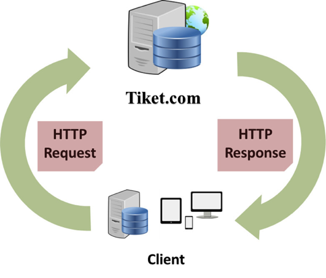

Sidang Proposal Tugas Akhir
Rancang Bangun Aplikasi Pembelian Tiket Pesawat Online Menggunakan API Tiket.com
pada platform IOS dengan bahasa pemrograman SWIFT
Created by Achmad Fatoni
Achmad Fatoni
115623001
Manajemen Informatika
Sidang Proposal Tugas Akhir
Rancang Bangun Aplikasi Pembelian Tiket Pesawat Online Menggunakan API Tiket.com
pada platform IOS dengan bahasa pemrograman SWIFT
Created by Achmad Fatoni
Mobilitas Masyarakat Modern
Permasalahan
1. Bagaimana cara mengakses API yang disedikan oleh tiket.com ?
2. Bagaimana cara mengolah data yang didapat dari API tiket.com sehingga dapat di aplikasikan pada bahasa pemrograman swift ?
Tujuan
Untuk menunjukkan cara pengolahan data dari API tiket.com dengan bahasa pemrograman swift.
Akademis
- Untuk penulis berguna sebagai dasar dalam penyusunan Tugas Akhir sebagai salah satu syarat kelulusan.
- Hasil dari penelitian ini diharapkan dapat menjadi panduan dasar dalam penggunaan bahasa pemrograman swift untuk mengembangkan aplikasi yang berjalan di sistem operasi iOS.
Masyarakat
Memberikan kemudahan dalam melakukan pemesanan tiket yang bisa dilakukan dimanapun dan kapanpun.
Keluaran yang diharapkan
Aplikasi dapat mempermudah masayakat melakukan pembelian tiket pesawat dimanapun dan kapanpun.
Batasan Masalah
- Jadwal pesawat yang ada terbatas hanya dari tiket.com.
- Aplikasi di optimasi untuk iPhone 4s dengan sistem operasi 8.1.
Penelitian sebelumnya yang relevan
-
Yusril Fahrizal, 2014
Perancangan Aplikasi Pemesanan Tiket Pesawat Berbasis Android
-
Dimas Syuhada Mahardian
Sistem Informasi Pemesanan Tiket Pesawat Berbasis WEB
Apple Developer Programs
- iOS Developer Program
- Mac Developer Program
- Safari Developer Program
Proses Pengambilan data dari Tiket.com
